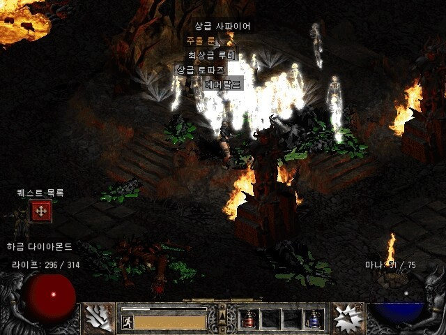

- 디아블로2
- 디아블로3
- 디아블로4
<
디아블로 2 초보자 큐빙법
본케용 인내재료(엘리트 15방상 갑옷)
-15방상 와이어 폴리스? 4솟이나 노솟
-15방상 세이크리드 노솟이나 4솟(힘바바용)
수수께끼재료(엘리트 방상3솟갑옷)
-15방상 노솟이나 3솟 메이지플레이트(수수께끼재료,라주크 3솟)
-15방상 고딕플레이트(어쌔유저분들이 찾는 경우가 있습니다, 입었을때 룩이 예뻐서 찾습니다, 라주크3솟)
-슈페리어(방상) 3솟 더스크 (태생이라 15방상아니라도 찾습니다)

-슈페리어(방상) 3솟 아칸(태생이라 15방상아니라도 찾습니다)
-슈페리어(방상) 3솟 세이크리드 아머(태생이라 15방상아니라도 찾습니다)
슈페는 당연히 더 비싸고 슈페는 큐빙이 안되서 3솟을 타고 나야해서
슈페 3솟은 비쌉니다
※저는 15방상 3솟 스캐럽 하스크 갑옷도 잘씁니다